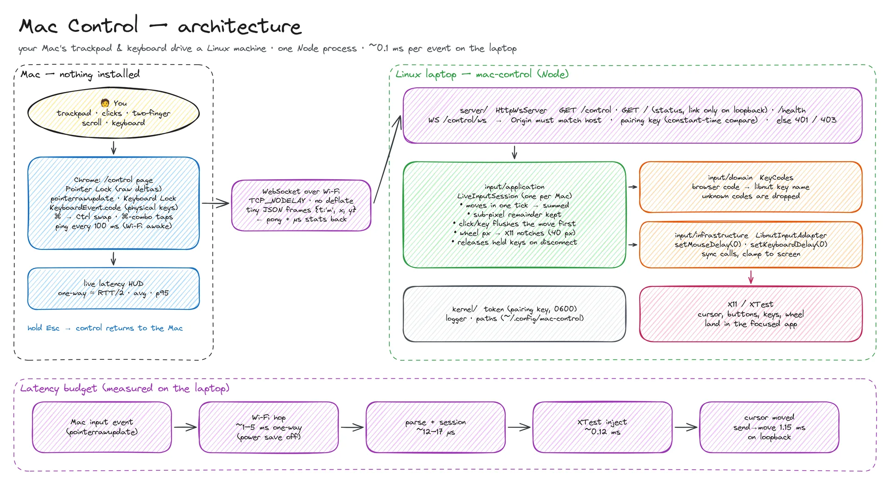

Capture on the Mac
The /control page locks the pointer and reads raw trackpad deltas and physical key codes, so your Linux keyboard layout decides the characters.
Open source · Linux X11 · Chrome on macOS
Open one link in Chrome on the Mac, click once, and its trackpad, clicks, two-finger scroll and keyboard drive the Linux machine next to it. Nothing to install on the Mac.
Measured on the laptop over its own Wi-Fi address. The Wi-Fi hop to your Mac adds roughly 1–5 ms one way; the page shows your real numbers live.
The /control page locks the pointer and reads raw trackpad deltas and physical key codes, so your Linux keyboard layout decides the characters.
Each event goes out right away over a WebSocket with Nagle off. A ping every 100 ms measures latency and keeps both Wi-Fi radios awake.
The laptop sums moves that land in the same tick and injects them through XTest with libnut's 10 ms default delay switched off.

git clone https://github.com/mohamedjs/mac-control.git
cd mac-control && npm install
npm startIt prints a pairing link like http://192.168.1.x:3030/control#t=… — the local page at http://127.0.0.1:3030 has a Copy button.
In Chrome open chrome://flags/#unsafely-treat-insecure-origin-as-secure, add http://<laptop-ip>:3030, enable it and relaunch. This unlocks raw pointer input and ⌘W / Esc capture.
Open the pairing link, click Take control. Hold Esc to give control back.
Wi-Fi power saving is the usual cause of 20–200 ms spikes. Turn it off on the laptop: nmcli connection modify "<wifi>" 802-11-wireless.powersave 2. Use 5 GHz or Ethernet when you can.
Input injection uses XTest, so log in with an Xorg session ("Ubuntu on Xorg"). Under Wayland only XWayland apps receive input.
⌘Tab, ⌘Space and ⌘Q belong to macOS — no web page can capture them. Everything else reaches the laptop.
Use Chrome (or another Chromium browser). Safari has no Keyboard Lock, so many shortcuts would stay on the Mac.